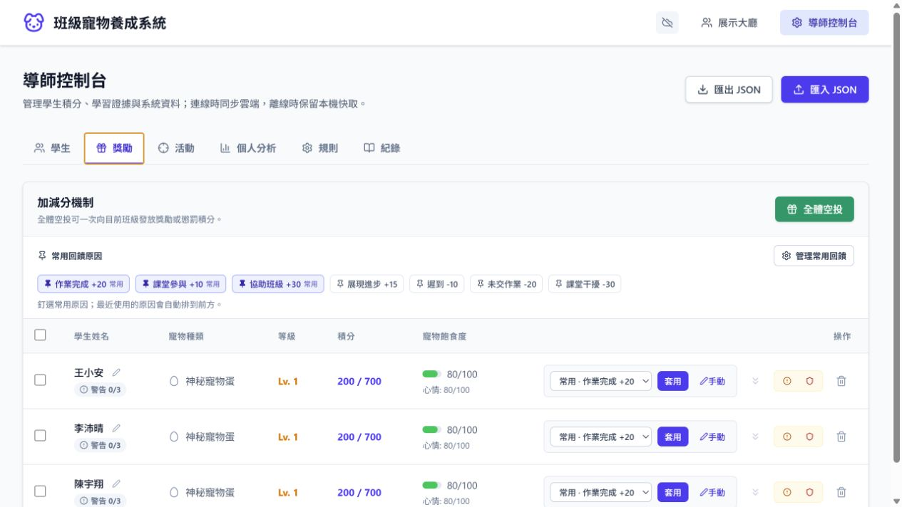
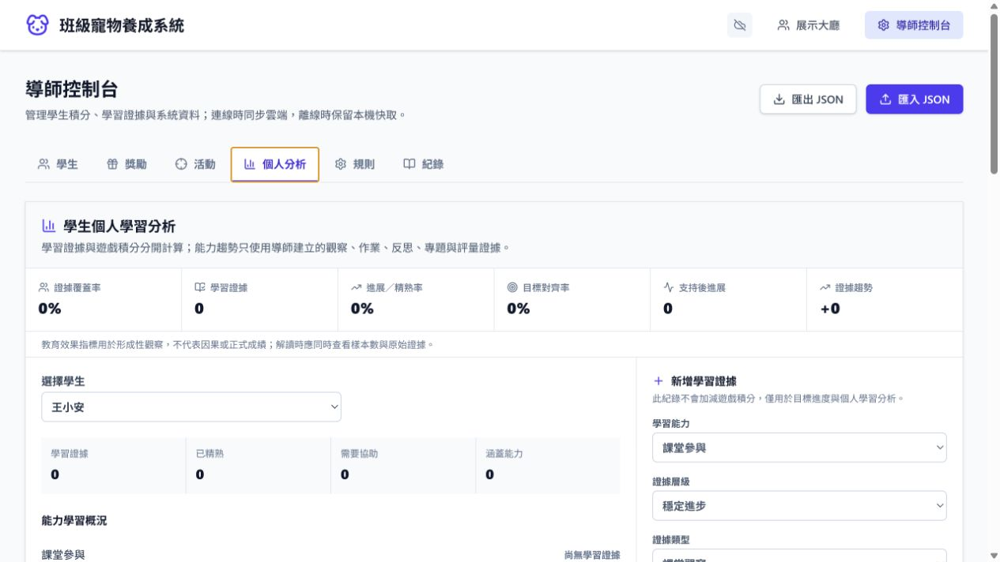

Commercial readiness audit · 2026-07-30
很有教育產品的骨架，還不是能安全規模化的商品。
ePet 已把班級激勵、形成性學習證據、考試趨勢與個別報告串成一條有差異化的教師工作流； 目前真正限制上架的不是功能量，而是身分、個資、資料架構與安全遊戲化治理。
01 · Readiness score
商業化成熟度一覽
教育價值和教師效益已明顯成形；最低分集中在商業軟體必須可信賴的基礎層。 上架順序應由「補功能」轉成「先消除制度性風險」。
教育遊戲化
8教師價值
7UX／行動操作
6包容與倫理
7無障礙
5資安與隱私
2多校擴充
302 · Product evidence
現況證據與產品判讀
以下均取自實際運行畫面。這套產品最有說服力的不是單一寵物機制，而是教師從班級輸入到個別回饋的完整閉環。
EVIDENCE 01
教師主導的班級工作台
資訊架構已清楚分成學生、獎勵、活動、個人分析、規則與紀錄；下一步是把初次建班、匯入名單與權限設定變成 10 分鐘內可完成的導入精靈。

EVIDENCE 02
高頻、可追溯的獎勵操作
常用原因、批次操作、飢餓與心情狀態形成了可理解的遊戲化回饋；應補上撤銷、異常偵測與可配置的班級公平政策。

EVIDENCE 03
積分與學習證據有意識地分離
這是最值得商業化的教育設計：遊戲獎勵不直接冒充學習成效。分析頁需從長表單改成「摘要—解讀—下一步」的教師決策節奏。
EVIDENCE 04
考試輸入到 A4 報告的價值主張成立
「全班一次輸入 → 自動趨勢與弱項 → 教師評語 → 個別 PDF」具直接節省時間的付費理由；行動版仍需固定操作列、批次貼上與離線草稿。
03 · Findings
值得保留的優勢，與不能帶進商店的風險
產品優勢
-
01
形成性證據與遊戲積分分離避免把順從、獎勵或排名誤當成學習成效。
-
02
具包容性模式的產品意識已看見公開比較、處罰與情緒壓力對學生的影響。
-
03
魔王討伐獎勵可拆分、可追溯排名、參與、進步獎勵的拆分有助於公平與說明。
-
04
考試分析規則可解釋、可測試比黑箱 AI 更適合教師採用，也更容易接受學校審查。
結構性風險
-
01
缺少正式身分與角色權限工作區識別不足以保護學生成績、評語與處罰紀錄。
-
02
學生個資與學習資料治理未成形需有資料最小化、保存期限、匯出、刪除與稽核紀錄。
-
03
單一大型 JSON 狀態成為擴充瓶頸同步衝突、局部查詢、備份、稽核與多校隔離都會受限。
-
04
教師導入仍高度手動空班級、長分析頁與逐格考試輸入會阻礙真實課堂採用。
04 · Launch blockers
公開上架前的四個 P0
這四項不是「之後再優化」；它們決定學校、家長與平台商店是否能信任產品。
P0 · 01IDENTITY
身分、角色與租戶邊界
導師、協同教師、行政、學生與家長應有明確角色；每個請求必須由伺服器驗證所屬學校與班級。
完成定義：越權測試與稽核紀錄通過P0 · 02PRIVACY
未成年人個資治理
建立最小收集、同意基礎、保存期限、刪除／匯出流程、隱私聲明與資料處理者盤點。
完成定義：可回應家長與學校資料請求P0 · 03DATA
正規化資料與可靠同步
拆分學生、事件、獎勵、考試與報告；加入版本、交易、備份還原、衝突處理與租戶隔離。
完成定義：故障演練可恢復且不遺失資料P0 · 04SAFETY
安全遊戲化與無障礙基線
預設隱藏敏感排名、限制負向操作、提供撤銷；完成鍵盤、焦點、對比、動態減量與螢幕閱讀測試。
完成定義：WCAG 2.2 AA 核心流程通過05 · Commercial roadmap
從封閉試點到多校商品
每一階段都要能被真實教師驗證，而不只是完成功能清單。
0–8 weeks · P0
上架阻斷
先建立可信任的產品底座。
- 正式登入、RBAC 與班級／學校租戶隔離
- 學生資料生命週期與管理者稽核工具
- 從單一 JSON 拆分核心資料表與事件紀錄
- 備份還原、同步衝突與離線草稿策略
- 安全遊戲化預設值與 WCAG 核心流程
8–16 weeks · P1
付費教師試點
證明節省時間與提升回饋品質。
- 名單 CSV 匯入、示範班與 10 分鐘導入精靈
- 考試成績批次貼上、驗證與快速鍵
- 個人分析改成摘要、解讀、下一步三層
- 個別 PDF 批次產生、校務品牌與列印驗證
- 教師回饋、功能採用與報告時間的產品分析
16+ weeks · P2
規模化與商店
從單班工具升級成可採購的平台。
- 多校管理、班級搬移、學年封存與跨裝置同步
- 方案、授權席次、試用、續訂與發票流程
- 家長／學生安全檢視與細緻分享權限
- 校務系統整合與可攜的資料匯入匯出
- 商店素材、支援 SLA、事件回報與營運手冊
06 · Positioning & packaging
先成為教師願意付費的 SaaS，再談學生商店遊戲
Recommended market position
教師主導的 B2B2C Web SaaS
班級激勵 × 形成性證據 × 家長可讀報告。寵物是持續參與的媒介；教師決策效率、學習回饋品質與資料可信度才是購買理由。